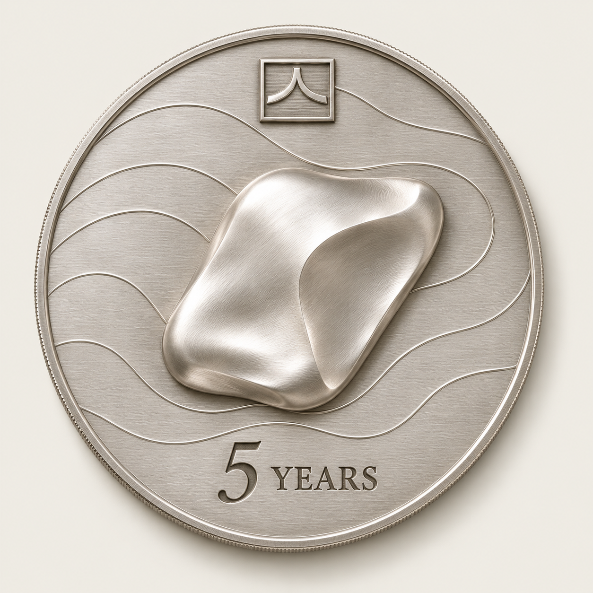
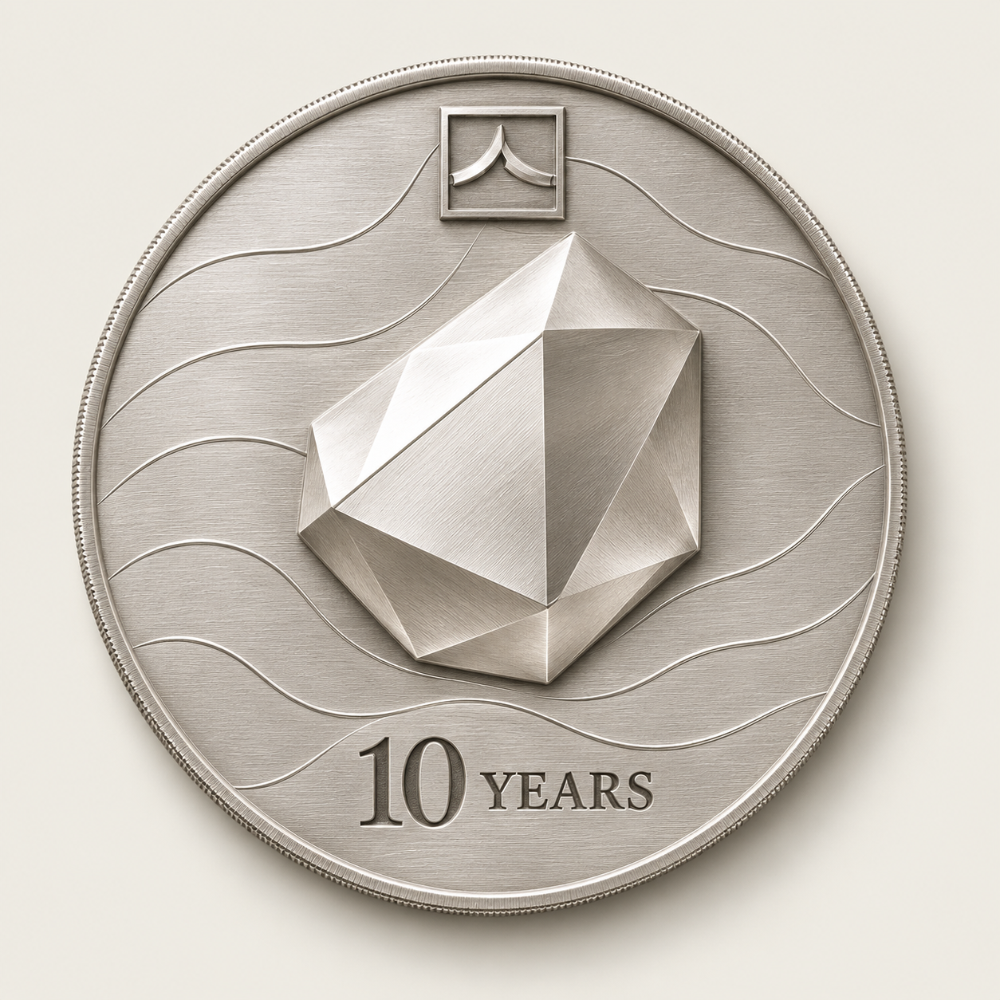
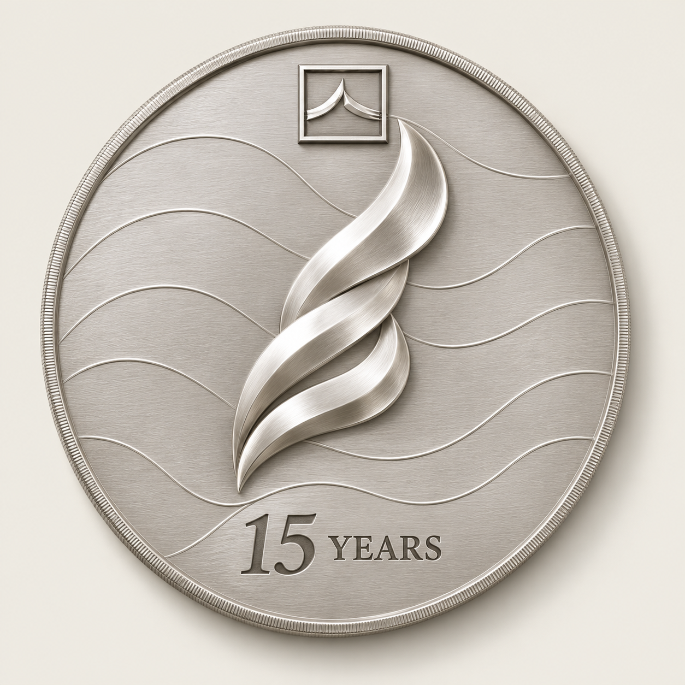
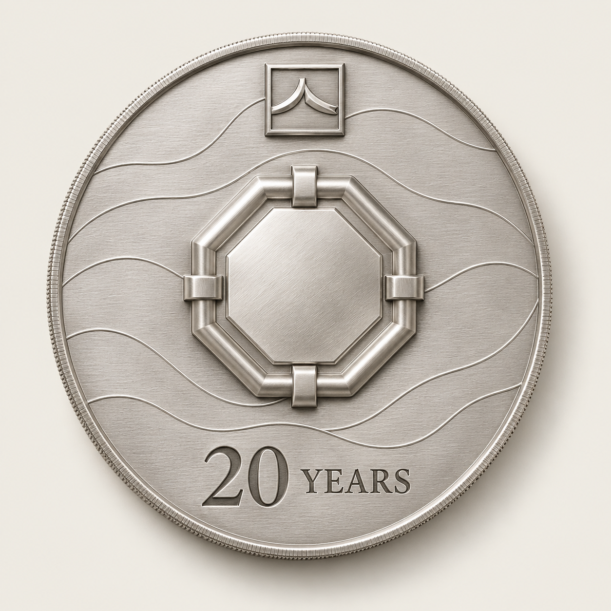
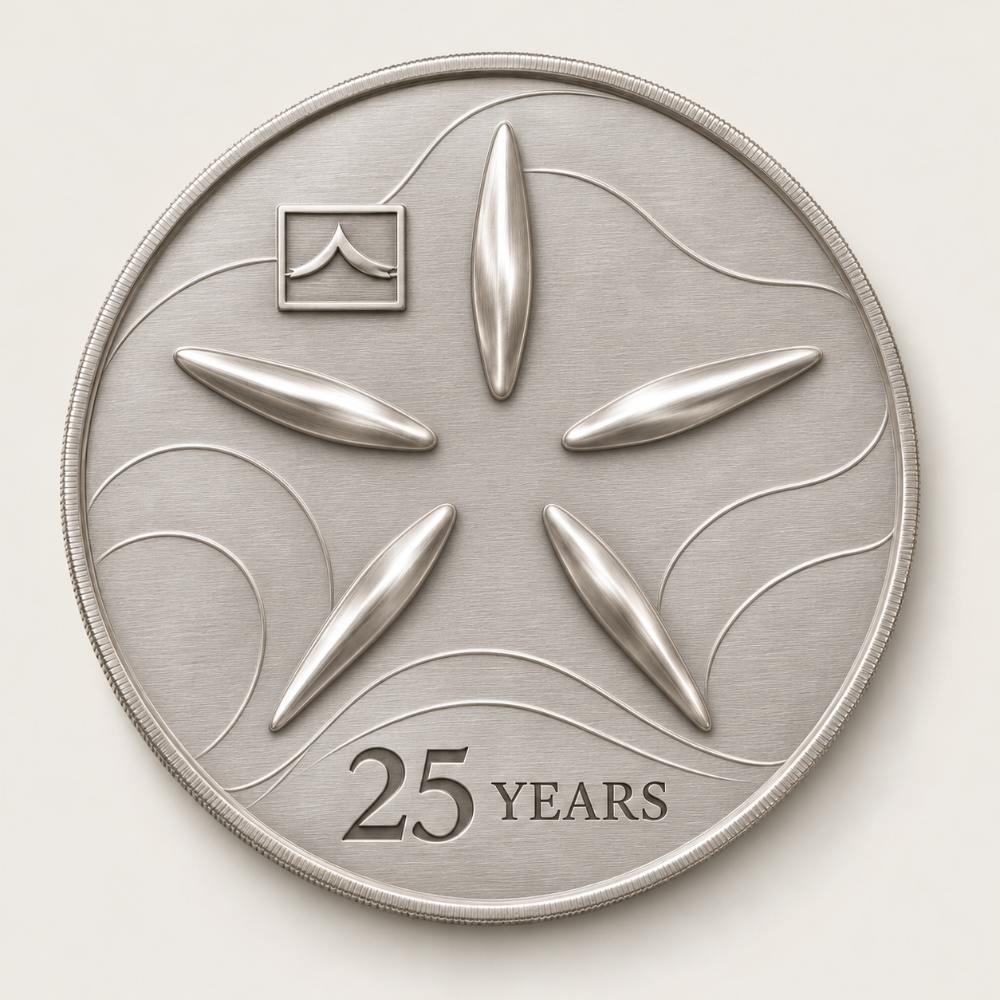
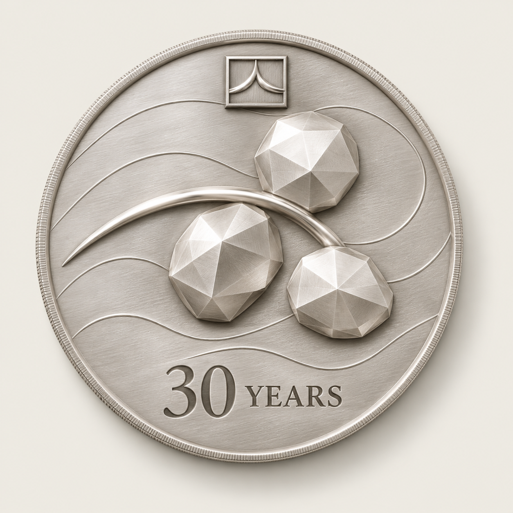
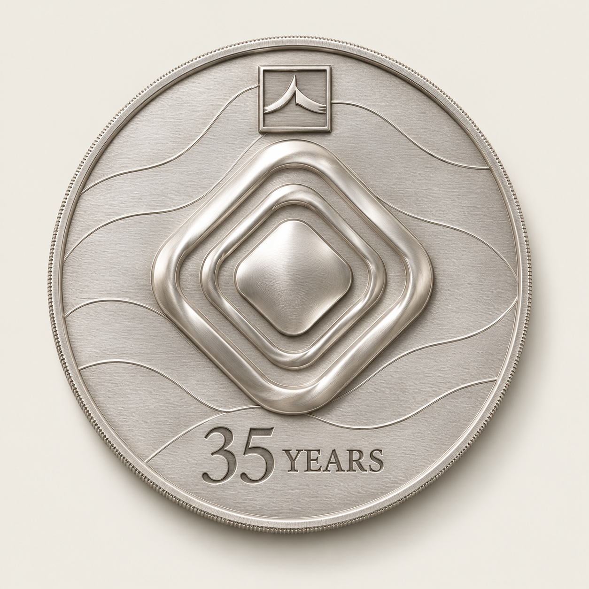
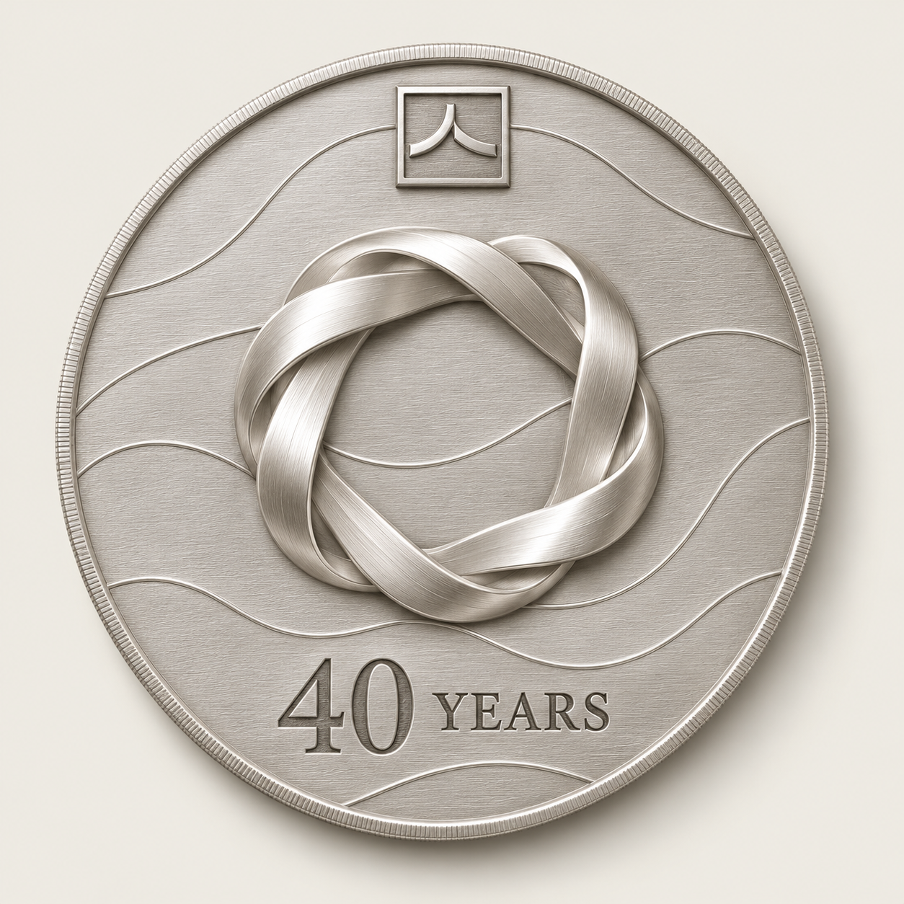
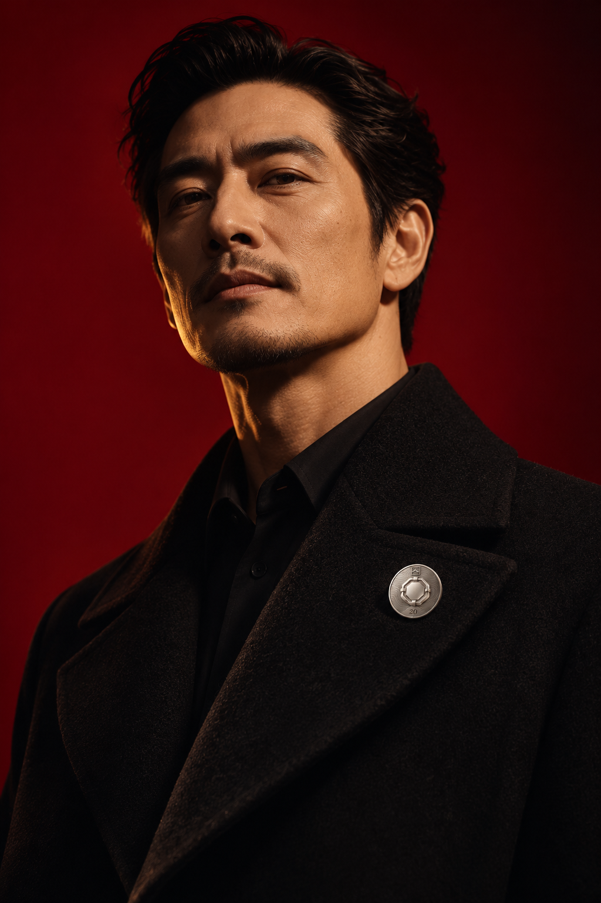
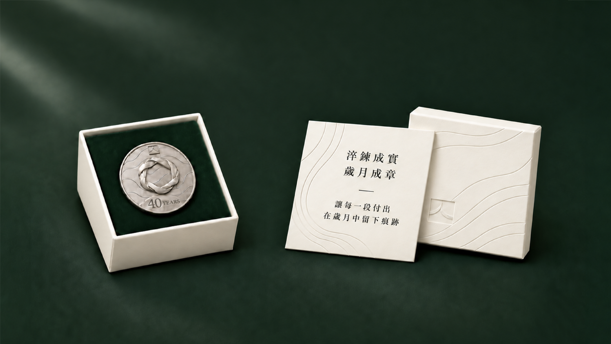

形態，映照成長
從有機曲面到交織環形，每一個造型，都為不同年資賦予自己的表情。
Tempered to Perfection,
Crafted by Years.
以金屬承載時間，以紋理記錄累積。
從初始的蘊質，到歷經淬鍊的雋永，八種形態，描繪每一段值得被珍藏的職涯旅程。








以手繪記錄成器勳章的構想。
從品牌印記到佩戴比例，逐一讀懂造型背後的理由。
手稿裡的線條，
是設計的起點。
展開下方細節說明，或放大查看原始手寫註記。
以銀色浮雕將品牌印記置於章面上緣，與圓形章體形成共同的榮譽識別。每個年資造型不同，始終承載同一份信念。
流動線紋融合年輪與掌紋的意象。年輪記錄時間，掌紋象徵行動，回應「手心向下」的付出精神。
以完整框架與四處承托結構圍繞中央量體，象徵二十年累積的經驗與責任，成為值得依靠、能承接託付的力量。
以內斂的霧面底紋襯托亮面浮雕。光線在不同曲面上流動，讓線紋與立體造型呈現細緻層次。
於章面下緣留下清楚的年資標記，讓二十年的服務歷程與個人故事，有具體可辨識的紀念。
圓章建議直徑約 25 mm，也就是 2.5 公分，低調佩戴於西裝翻領。側面厚度、浮雕高度及背面別針扣均為構想，實際結構需經打樣確認。
概念手稿，非製造工程圖。材質、尺寸與固定結構以實際打樣為準。

黑色羊毛的沉穩，襯托銀色浮雕的細膩。
一枚成器勳章，記錄二十年實踐所形成的專業與力量。
品牌印記、流動線紋與年資刻字，在翻領上留下低調而清晰的個人紀念。
米白紙材的溫潤，襯托銀色勳章的光澤。
波紋以凹壓延伸至盒蓋與卡片，深綠內襯承接每一份榮耀，讓開盒也成為一場鄭重的致意。

從有機曲面到交織環形，每一個造型，都為不同年資賦予自己的表情。
連續的波紋成為系列共同的語言，貫穿勳章、紙盒與卡片。
讓授予的片刻，延伸為可以觸摸、可以珍藏的紀念。